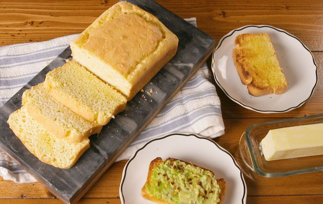

Keto bread

The key here is to get your whipped egg whites nice and stiff. Peaks should hold straight up when you lift your beaters out of the whites.
INGREDIENTS
- 6 large eggs
- 1/2 tsp. cream of tartar
- 1/4 c. (1/2 stick) butter, melted and cooled
- 1 1/2 c. finely ground almond flour
- 1 tbsp. baking powder
- 1/2 tsp. kosher salt
DIRECTIONS
- Preheat oven to 375° and line an 8"-x-4" loaf pan with parchment paper. Separate egg whites and egg yolks.
- In a large bowl, combine egg whites and cream of tartar. Using a hand mixer, whip until stiff peaks form.
- In a separate large bowl using a hand mixer, beat yolks with melted butter, almond flour, baking powder, and salt. Fold in 1/3 of the whipped egg whites until fully incorporated, then fold in the rest.
- Pour batter into loaf pan and smooth top. Bake for 30 minutes, or until top is slightly golden and toothpick inserted comes out clean. Let cool 30 minutes before slicing.